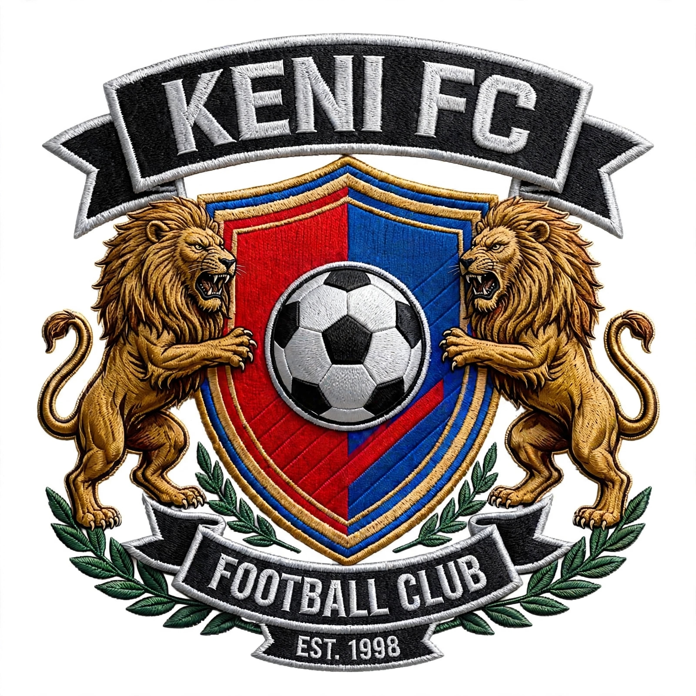

Welcome to KENI FC
Proudly representing Hakumbu Ward, Kigumo Sub-County since 1998. The Golden Hearts of Murang'a County.

Golden Hearts Since 1998
Proudly representing Hakumbu Ward, Kigumo Sub-County since 1998. The Golden Hearts of Murang'a County.